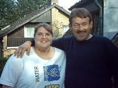
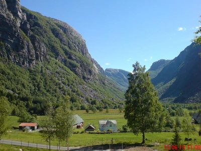
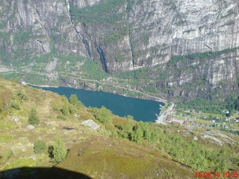
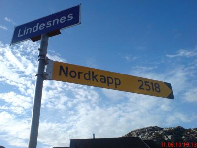
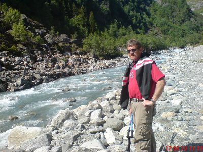
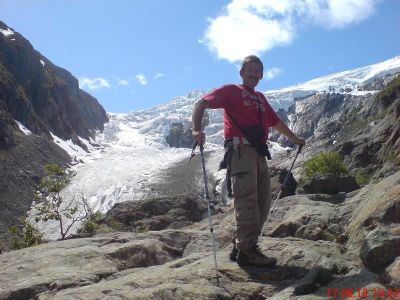
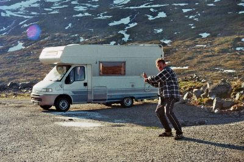

Auf dieser Seite will ich Euch einige meiner Freunde zeigen.
Sollte der eine oder andere von den hier gezeigten Personen etwas gegen die Veröffentlichung seines Bildes haben, werde ich dieses natürlich umgehend aus der Collection herausnehmen.
Hier sieht man Verena! Sie ist eine der wunderbarsten Menschen, die mir je begegnet sind.
Hier sieht man neben mir eine liebe Freundin von aus NRW. Anja ist ein sehr lieber Mensch, dem man blind vertrauen kann! Obwohl wir uns noch nicht sehr lange kennen, ist in kurzer Zeit schon eine enge Freundschaft entstanden.
Klicke auf das Bild, um auf Anja´s HP zu gelangen.
Tal am Lysefjord
Der Lysefjord von oben.
Vom Südkap Norwegens bis zum Nordkap 2518 Km.
Vor dem Aufstieg zum Gletscher.
An der Gletscherzunge des Buar-Gletschers.
 Alte Verteidigungsanlagen am norwegischen Südkap Alte Verteidigungsanlagen am norwegischen Südkap
das ist meiner!! lach
|